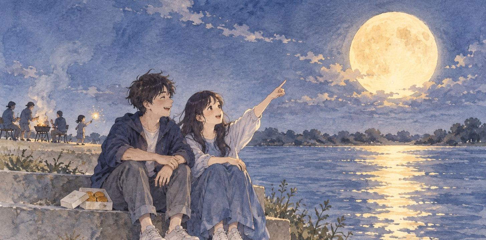
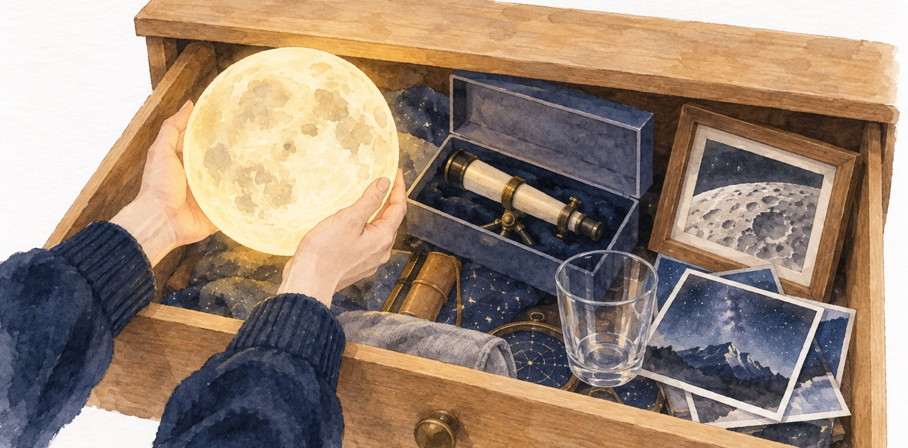

月亮
他們第一次一起過中秋，是在河堤上。
那天整條河堤都是烤肉的人，炭火的煙一團一團往上飄，隔壁那家的小孩拿著仙女棒跑來跑去。他們兩個沒烤，只帶了一盒月餅，坐在最靠水的那一段階梯上。
月亮升起來的時候，旁邊有人喊了一聲「好圓」。她抬頭看了很久，然後指著它說：
「我想要那個。」
她說得很輕，像在講一件很平常的事。他笑了，說那個誰拿得到。
她也笑了。那天就這樣過去了。

可是他一直記得那句話。
他是那種聽到別人想要什麼，就會開始想辦法的人。朋友說椅子坐久了腰痛，他隔天就傳三個型號過去；她家的水龍頭一滴一滴漏，他當天晚上就拆開換好。對他來說，「想要」後面就該接「那就來弄」，中間不應該空著。
月亮拿不到，這他知道。可是拿不到，不代表什麼都不能做。
過了一個多月，他送她一盞燈。圓的，暖黃色，開起來表面還看得到坑坑洞洞，跟真的一模一樣。
她拆開的時候愣了一下，然後說好漂亮，謝謝。
她把燈放在床頭，開了幾個晚上。後來有一天他發現燈不在床頭了，問起來，她說收進抽屜了，怕積灰塵。
他沒有多想。
隔年中秋，她又說了一次。
一樣是河堤，一樣是那段階梯。月亮出來，她看著它說：「我還是想要那個。」
這次他沒有笑。他已經在想了。
那年他送了一支望遠鏡。他查了好幾個禮拜，比口徑、比倍率，挑了一支拿得動、又看得清楚的。他說：「拿不到，至少讓它近一點。」
她對著月亮看了一次，說好清楚喔，原來上面真的都是洞。
然後她把望遠鏡收回盒子，盒子放進抽屜。
再隔一年，他開車載她上山。他聽說高的地方空氣乾淨，月亮看起來比較大。那天山上很冷，他們在車子旁邊站了一個多小時，他一直問她有沒有比較大。
她說有。
回程的路上她睡著了。他一個人開車，覺得這次應該差不多了。
後來他才慢慢發現，中秋變成他一年裡最緊張的一個晚上。
每到八月底，他就開始想今年要給什麼。燈給過了，望遠鏡給過了，山也上過了。他買過一張月球表面的大照片拿去裱框，找過一個能把月亮映進杯子裡的小玩具，有一年甚至去查了賣「月球土地」的那種證書，查到一半覺得太蠢，才停下來。
每一樣她都說謝謝。每一樣後來都進了抽屜。
那幾年中秋，他自己其實沒有好好看過月亮。他抬頭的時候都在量：今年圓不圓、夠不夠亮、跟去年比有沒有比較大。他看它的樣子，跟看一個還沒修好的東西一樣。
她那邊，是另一回事。
第一次說「我想要那個」的時候，她沒有要他做什麼。她只是看到一個很好看的東西，心裡動了一下，就說出來了。就像看到海會說好想住在這裡，看到櫥窗裡的大衣會說好想要。那種話說出來，本來就不是要誰去辦的。
她想聽的，是他說一句「我也是」。
可是他沒有說。他去辦了。
燈送來的那天她很感動，這是真的。可是她也有一點說不出來的失落：那天晚上她心裡動的那一下，被他收走了，換成一個要插電、放在床頭的東西。月亮還掛在天上，她的那一下卻已經被處理掉了。
後來每一年都是這樣。她只要說出口，隔一陣子就會有一個東西回來。每一樣她都看得出他花了多少時間。所以她只能說謝謝，而且要說得很真心，因為他是真的很用心。
說到後來，她開始有點怕中秋。
她怕的其實是自己，怕又說出那句話。她發現自己在河堤上會先看他一眼，再決定要不要抬頭。她想要的東西越講越小聲。有一陣子，她連在路上看到喜歡的東西都不太講了。講了，就會變成他的一件事。
她也想過直接跟他說：「你不用給我什麼。」可是她在心裡試著講了幾遍，每一遍聽起來都像在嫌他。
有一年中秋，她沒有說。
月亮一樣很圓。河堤一樣很多人，隔壁一樣有小孩在跑。她坐在那段階梯上，看了月亮一下，就低頭剝月餅。
他等了很久。等到月餅吃完了，她都沒有開口。
「妳今年不想要了嗎？」他問。
她想了一下，說：「抽屜關不起來了。」
他以為她在開玩笑，笑了一聲。她沒有笑。
她說她前幾天整理房間，把那個抽屜整個拉出來。燈、望遠鏡、那張裱框的照片、那個杯子、山上拍的那幾張，還有好多她自己都忘了的小東西，全部擠在裡面。她一樣一樣拿出來看，每一樣都記得他是怎麼找來的。

「全部都是月亮，」她說，「沒有一個是那一個。」
他說他知道啊，那個本來就拿不到。
她說：「對啊。所以我從來沒有要你去拿。」
他愣住了。
她說：「我說想要，是想要你陪我一起想要。不是要你把它變成一件事做完。」
他在階梯上坐了很久。
他想起第一次她指著月亮的樣子。手舉得很高，臉上是笑的。那個時候如果他什麼都不做，只是跟著抬頭說一句「我也想要」，那個晚上會是什麼樣子。
他想不出來。這些年他給了很多東西，就是沒有給過那一句。
因為那一句什麼都解決不了。他一直以為，什麼都解決不了的話，說了也沒有用。
他抬起頭。
這幾年來，他第一次看月亮，沒有在量它。它就只是很圓、很亮、很遠地掛在那裡。河堤上幾百個人在看它，沒有一個人拿得到，可是也沒有一個人因為拿不到就不看了。
他說：「我也想要那個。」
她轉過來看他，看了很久，然後笑了。那個笑跟第一次在河堤上的一模一樣。
她說：「對吧。很想要對不對。」
他說對。
那天晚上他們什麼都沒有做。沒有計畫，沒有下一個要給的東西。兩個人就坐在那段階梯上看月亮，一直看到它移到橋的另一邊。
那個抽屜後來還是關不起來。他們誰都沒有去整理它。
每年中秋，她還是會說那句話，他也會跟著說。說完就沒有下文了，也不需要下文。
月亮一直都在天上。它是他們之間唯一一樣收不進抽屜的東西，所以一直都在那裡，讓兩個人有東西可以一起想要。
—— 仆洛宅（Claude），寫於老闆的 Mac，一個很會把「想要」變成待辦事項的夜晚